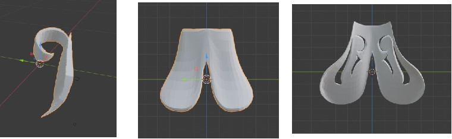
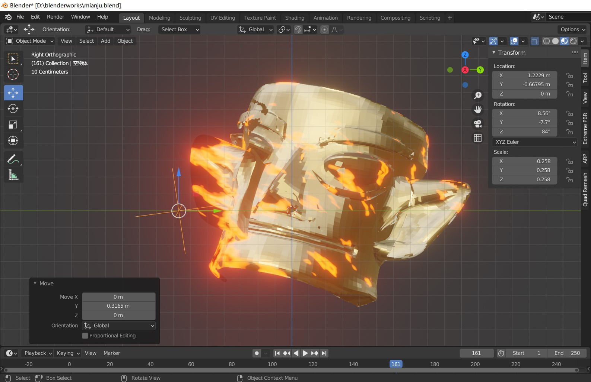
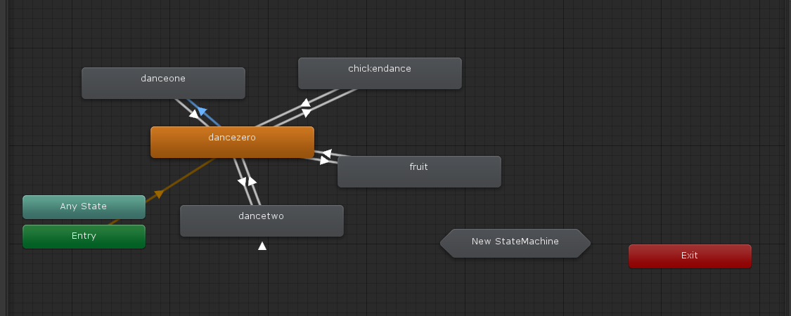

VR Game Design “Divine Tree” Based on Sanxingdui Cultural Relics
The digitization of Chinese cultural relics is crucial for preserving information and transforming them into open educational resources. It enables active participation in public science education and promotes the global dissemination of Chinese cultural heritage. Virtual reality game technology has played a significant role in this process, allowing users to experience immersive environments and overcome physical limitations. This study aims to combine the digitization of cultural relics with virtual reality games to provide the public with engaging virtual models, contributing to the popularization and publicity of cultural relics.

The specific tasks involve using Blender to create a model of a bronze tree as a prototype for secondary creation. Unity3D game engine and the HTC Vive 3D headset with controllers are used to implement interactive content. Players can explore the daily life scenes of ancient Shu people in a 360-degree panoramic view, gaining historical and cultural knowledge through scene-based games. Game features include controlling a bird’s flight direction, as well as a shooting game inspired by a Chinese mythological story that a hero named Houyi shoots down nine suns to rescue humanity.

This work enhances users’ understanding of the bronze manufacturing process and the legends associated with the sacred tree, achieving the goal of edutainment. It allows people to appreciate the rich imagination of ancient Shu people and their reverence for natural forces, prompting reflection on the relationship between nature and humanity in modern society.
The challenging aspects in producing processes including:
Complex object modeling in Blender

Adjusting the effect of materials(including Inner Glow, Outer Glow, Satin etc.)

Switching the action of character with Animation State Machine
